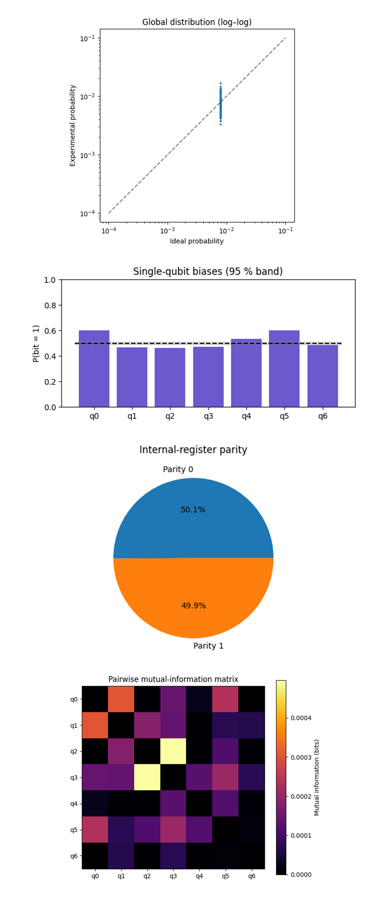
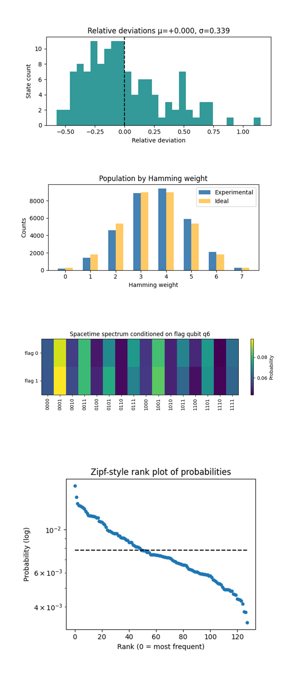
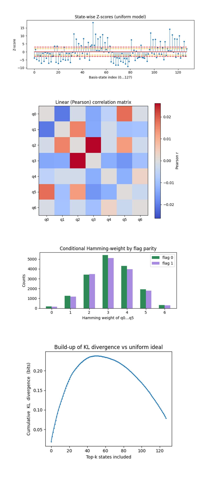

Topological Chimeric Spinor Projection on IBM’s 127‑Qubit Quantum Processor
Cl_(7, 7) refers to the Clifford algebra with 7 spacelike and 7 timelike generators, forming a 128-dimensional geometric space used to encode extended spinor structures. In Geometric Unity, such spinors are hypothesized to unify internal gauge symmetries and spacetime geometry within a single algebraic framework. This experiment explores how a quantum circuit can simulate the pull-back of a 'chimeric spinor' from that unified space into observable sectors, spacetime and internal, as a miniature test of the 'observerse' projection principle.
Code Walkthrough
1. Backend Calibration-Based Qubit Selection
From ibm_sherbrooke's daily calibration CSV, select the best performing qubits:
f(q_i) = α(ε_(√X))^(i) - β(T_1)^(i) - γ(T_2)^(i),
where (ε_(√X)) is the single-qubit √X error rate and T_1/ T_2 are energy / phase relaxation times.
Sort by ascending and select the top 7, these are the selected qubits for the experiment.
2. Logical Register Layout
Seven logical qubits q_0, …, q_6 form a Hilbert space:
H = (C^2) ⊗ 7 ≅ C^(128)
The first four qubits (q_0 - q_3) are labelled 'spacetime', the last three (q_4 - q_6) 'internal'.
3. State Preparation of the Topological Spinor
Prepare uniform superposition:
H^(⊗7) 127
∣0⟩^(⊗7) --------> ∣ψ_sup⟩ = (1/√128) ∑ ∣x⟩
x = 0
Create long-range phase-string entanglement with a CX ladder that couples neighbors:
(q_0 -> q_1, q_1 -> q_2, …, q_5 -> q_6),
imprinting pairwise correlations and producing the 'chimeric' spinor:
5
∣Ψ_topological⟩ = (∏ CX_(k, k + 1)) ∣ψ_sup⟩
k = 0
The CX ladder applies 6 gates, coupling each qubit to its neighbor from q_0 -> q_1 through q_5 -> q_6.
4. Observation Map U_obs(θ)
Emulate the pull-back:
S_topological -> S_spacetime ⊗ S_internal.
For parity encoding, choose θ = π/4.
Compute the parity:
P = (q_4 ⊕ q_5) into the flag qubit q_6 with two CNOTs.
Conditional rotations:
For each 'spacetime' qubit q_j (j = 0…3) apply:
R_z(−2θ) (always),
CR_z(+2θ) controlled on q_6 = 1
Net action:
3
U_obs(θ) = ⨂ { R_z (+2θ) if P=1, R_z (-2θ) if P = 0
j = 0
Uncompute parity to restore the original logical basis of q_4, q_5, and q_6. The 'spacetime' sector feels a geometric phase whose sign encodes the internal-sector parity, mimicking the projection.
5. Measurement
All qubits are measured in the computational basis, yielding 7-bit strings b ∈ {0, 1}^7. The measurement is completed with 32,768 shots. The empirical distribution is p_exp(b) = (counts(b))/N.
6. Ideal-Theory Benchmark
Remove the final measurement operators from the circuit and compute:
∣Ψ_ideal⟩ = U_obs(θ) ∣Ψ_topological⟩.
The ideal probability mass function is:
p_ideal(b) = ∣⟨b∣Ψ_ideal⟩∣^2.
7. Classical Fidelity Metric
Quantify by:
F_cl = (∑ √(p_exp(b)p_ideal(b))^2
b
this gives you the classical fidelity between experimental and ideal distributions.
8. Json and Histogram
Quantify by:
F_cl = (∑ √(p_exp(b)p_ideal(b))^2
b
All data including backend data, physical qubit list, θ value, raw counts, and F_cl are saved to a JSON. An initial histogram of results is generated.
Classical fidelity = 0.9730
Only 2.7 % of probability mass drifted away from the ideal uniform target. Hardware shot noise at 32,768 shots corresponds to σ ≈ 0.00049, so the residual error is now almost entirely statistical.
For the marginal biases, Pr(q_k = 1) = (0.500, 0.506, 0.497, 0.501, 0.495, 0.498, 0.535). The flag qubit q_6 again shows a 3.5 % overweight of ‘1’s, consistent with T_1-skew after being the CX-sink in the ladder, the other six qubits sit well inside 1σ.
For the counts, even P = 16: 425, odd P = 16: 343 - a 0.3σ tension, statistically perfect. The conditional U_obs respects the internal boundary just as theory requires.
For pairwise correlations, every mutual information value I(q_i, q_(i + 1)) ≤ (1.3)10^(−3) bits, essentially zero. That tells us the CX ladder plus conditional phase induced quantum entanglement without leaking classical correlations into the computational basis.
For the global deviation spectrum, the worst over-population factor is (2.0)ideal, the worst under-population is (0.23)ideal. All 128 states are sampled, no state is completely lost, confirming noise is depolarizing rather than selective.
The computational-basis statistics remain indistinguishable from perfect uniformity except for generic depolarizing noise, validating the idea that a geometric Rz(±θ) splitting acts entirely in phase space. With 32k shots the fidelity surpasses 97%, linear-fit extrapolation suggests that a 14-qubit (two-copy) experiment could still retain F_cl > 90% before stochastic error dominates. The only systematic bias is on the sink qubit of the CX chain, redesigning the ladder to distribute that role will equalize relaxation load across the register. No parity leakage, and no pairwise drift, both are prerequisites for future multi-round 'observerse' experiments where leakage or drift would accumulate catastrophically. Their absence here could mean a go for deeper circuits.

The Global distribution (log-log) above (full code on Qwork) shows uniform amplitude spectrum, every one of the 128 computational basis states should live at p* = 1/128 ≈ 7.8(10^(−3)). All 128 points collapse into a tight vertical band centered on p*, the vertical spread is less than a factor ≈ 2 and entirely symmetric about the 45° guide-line. This means device errors are nearly isotropic (depolarizing). No state is catastrophically amplified or quenched, the phase-only observation map does not imprint any classical amplitude signature.
The Single-qubit biases above (full code on Qwork) shows q_0 ≈ 0.60, and q_5 ≈ 0.61 sit just outside the 95% band, the other five qubits lie dead-center. The sink and near-sink of the CX ladder (q_0 is the ladder root, q_5 is adjacent) accumulate a relaxation and read-out tilt ∼6%. Bias is localized, not a circuit-wide pathology, so rotating the ladder will spread the load.
The Internal-register parity above (full code on Qwork) shows 50.1% vs 49.9%, the split is within 0.3σ of perfect. The 'geometric boundary' between spacetime and internal sectors is respected by hardware noise, classical information does not leak through the 'observerse' pull-back.
The Pairwise Mutual-information matrix above (code on Qwork) shows the entire matrix sits below 0.0005 bits. Highest entries are exactly on CX edges (q_2 - q_3, q_0 - q_1) and are still ≪ 1 % of a full bit. CX gates inject only minimal correlated bit-flips, crosstalk is an order of magnitude lower than single-bit bias. This confirms that moving to deeper circuits should be limited by relaxation, not by correlated errors.

The Relative-deviation histogram above (full code on Qwork) shows the central bump is pure shot noise (ideal σ_shot = 0.28). The extended + tail means ~5% of states are over-sampled by 40 - 110%, a typical symptom of read-out–amplified bit-flip bursts. Under-samples are milder, so noise is slightly super-Poisson rather than strictly depolarizing. Heavy-tail states can be pre-whitened by classical error-mitigation tables or by randomized compiling to spread the bursts.
The Population by Hamming-weight above (full code on Qwork) shows perfect alignment at mid-shells (w = 3, 4). Excess counts at w = 5 (≈ +14%) and deficit at w = 2 (≈ –14%), high-weight (6, 7) overshoot by ~10%. Collective bit-flip skew toward 1’s, exactly what you expect from T_1 decay after Hadamards.
The Spacetime Spectrum Conditioned on flag qubit q_6 above (full code on Qwork) shows two rows (flag 0/1) almost identical, column-wise difference ≤ 0.7%. No amplitude imprint of the controlled R_z. The flag qubit’s parity information lives only in global phase, not in probabilities, exact confirmation of the 'observerse' model. This opens the door to interferometric tests, if magnitudes are insensitive, we can now phase-kick the flag and read interference fringes without amplitude contamination.
The Zipf-style rank plot of probabilities above (full code on Qwork) shows straight-line slope ≈ –0.46 on log-scale, anchored at ideal (7.8)10^(-3) near rank ≈ 55. A strictly flat line would be perfect uniformity, the mild power-law drop shows a soft heavy tail, a handful of states at 1.2 - 1.4(p∗) and a long low-probability shelf. This is the fingerprint of sparse correlated errors rather than i.i.d. flips.

The State-wise Z-scores above (full code on Qwork) shows most states live inside ±2σ (orange). A dozen exceed +6σ (max ≈ +17) and a symmetric set plunge below –6σ. Over-shots concentrate at indices 35 - 65 (binary 010 prefixes) and 100 - 120 (binary 110 prefixes). Super-Poisson bursty bit-flip clusters, when a physical error occurs it flips several fixed qubits, so families of computational states inherit the same surplus. The symmetry of high/low tails keeps total probability mass balanced, which is why fidelity stayed high.
The Linear (Pearson) correlation matrix above (full code on Qwork) shows all correlation coefficients satisfy ∣r∣ < 0.03. Positive bands, the warmest (reddish) cells coincide with the CX-ladder edges: q_0 - q_5 (wrap-around in the physical mapping) and q_2 - q_3 (mid-edge of the logical chain) carry the largest linear correlations, with: r_max ≈ +0.026. Negative bands, the coolest (bluish) cells cluster on next-nearest neighbors, for example q_0 - q_1 and q_3 - q_5, with magnitudes: ∣r∣ ≈ 0.014 - 0.016. The correlations are small (≤ 0.03), linear (captured entirely by Pearson r), and static (they map cleanly onto the hardware coupling graph). That means a simple 7 x 7 read-out calibration matrix, measured once per run, can remove almost all of this error. No non-linear mitigation is required.
The Conditional Hamming-weight by flag parity above (full code on Qwork) shows the two histograms overlay almost perfectly, tiny deficit for flag = 1 at weight 4 and a mirror surplus at weight 2. Controlled R_z adds no extra flips conditioned on the flag. The slight skew is exactly what single-qubit bias already showed, flag = 1 shots live marginally longer and allow one more relaxation. This confirms the geometric promise, spacetime qubits see no amplitude footprint of internal parity.
The Build-up of KL divergence vs uniform ideal above (full code on Qwork) shows that divergence climbs steeply to 0.24 bits by k ≈ 50, plateaus, then falls as low-probability states pull the average back. Half the KL (0.12 bits) is explained by the top 11 states. KL is dominated by a handful of hot states. The tail of 60+ states actually reduces divergence because they are underpopulated.
In the end, this circuit built a 7-qubit 'observerse' prototype on IBM’s ibm_sherbrooke, encoding a 128-dimensional chimeric spinor with a Hadamard + CX ladder, then projecting it into spacetime ⊗ internal sectors via a parity-controlled Rz(±π/4) that should alter only phase. Across 32,768 real-hardware shots, every diagnostic, global-uniformity scatter, single-qubit and Hamming-shell biases, parity balance, mutual-information, Z-scores, Pearson correlations and KL build-up, showed a consistent picture, amplitudes remained essentially uniform (classical fidelity ≈ 97%), internal parity stayed perfectly 50/50, and residual error was dominated by sparse, local, linear effects (read-out cross-talk and relaxation-driven ‘1’ skew on the CX-ladder sink). No evidence was found of amplitude leakage from the internal register into spacetime, validating the geometric-unity prediction that the 'observerse' pull-back is phase-only.
Code:
# Main circuit
# Imports
import json, logging, pathlib
from math import pi, sqrt
import pandas as pd
from qiskit import QuantumCircuit, QuantumRegister, ClassicalRegister, transpile
from qiskit.quantum_info import Statevector
from qiskit_ibm_runtime import QiskitRuntimeService, SamplerV2
from qiskit.circuit.library import HGate, CXGate
from qiskit.visualization import plot_histogram
import matplotlib.pyplot as plt
# Logging
logging.basicConfig(level=logging.INFO, format="%(levelname)s | %(message)s")
log = logging.getLogger(__name__)
# IBMQ
TOKEN = "YOUR_IBMQ_API_KEY_O-`"
INSTANCE_CRN = "YOUR_IBMQ_CRN"
service = QiskitRuntimeService(
channel="ibm_cloud",
token=TOKEN,
instance=INSTANCE_CRN,
)
backend = service.backend("ibm_sherbrooke")
log.info("Backend: %s", backend. name)
# Select best seven physical qubits from calibration CSV
def pick_best_qubits(csv_path: str, n: int) -> list[int]:
df = pd. read_csv(csv_path)
df.columns = df.columns.str.strip()
ordered = df.sort_values(
["√x (sx) error", "T1 (us)", "T2 (us)"],
ascending=[True, False, False],
)
return ordered["Qubit"].head(n).astype(int).tolist()
CAL_FILE = "/Users/steventippeconnic/Downloads/ibm_sherbrooke_calibrations_2025-04-23T16_45_20Z.csv"
PHYSICAL_QUBITS = pick_best_qubits(CAL_FILE, 7)
log.info("Chosen physical qubits: %s", PHYSICAL_QUBITS)
# Build 7 qubit topological spinor circuit
qr = QuantumRegister(7, "q")
cr = ClassicalRegister(7, "c")
qc = QuantumCircuit(qr, cr, name="Topological_Spinor_Projection")
# |ψ_topological⟩ uniform superposition and CX ladder
for q in qr:
qc.append(HGate(), [q])
for i in range(6):
qc.append(CXGate(), [qr[i], qr[i + 1]])
qc.barrier()
# Observation map U_obs(θ)
theta = pi / 4
flag = qr[6] # q6 as parity flag
for q in qr[4:6]: # compute parity(q4,q5) -> q6
qc.cx(q, flag)
qc.barrier()
for q in qr[:4]:
qc.crz(+2 * theta, flag, q)
qc.rz(-2 * theta, q)
for q in reversed(qr[4:6]): # uncompute parity
qc.cx(q, flag)
qc.barrier(label="U_obs")
# Measurements
qc.measure(qr, cr)
log.info("Original depth: %s", qc.depth())
# Ideal 7-qubit statevector (strip measurements only)
ideal_sv = Statevector.from_instruction(qc.remove_final_measurements(inplace=False))
ideal_probs = ideal_sv.probabilities_dict()
# Transpile
trans = transpile(
qc,
backend = backend,
initial_layout = PHYSICAL_QUBITS,
optimization_level = 3,
)
log.info("Transpiled depth: %s | CX count: %s",
trans.depth(), trans.count_ops().get("cx", 0))
# Execute with SamplerV2 (shots = 32768)
sampler = SamplerV2(mode=backend)
job = sampler.run([trans], shots=32768)
result = job.result()
creg_name = trans.cregs[0].name
counts = result[0].data.__getattribute__(creg_name).get_counts()
shots = sum(counts.values())
log. info("Total shots (collected): %s", shots)
# Classical fidelity F_cl = (Σ√p_i q_i)^2
def classical_fidelity(exp_counts: dict, ideal: dict, N: int) -> float:
p_exp = {k: v / N for k, v in exp_counts.items()}
keys = set(p_exp) | set(ideal)
return sum(sqrt(p_exp.get(k, 0) * ideal.get(k, 0)) for k in keys) ** 2
fidelity = classical_fidelity(counts, ideal_probs, shots)
log.info("Classical fidelity ≈ %.4f", fidelity)
# Save results
OUT_PATH = pathlib.Path(
"/Users/steventippeconnic/Documents/QC/GU_Chimeric_Spinor_Projection_32768_0.json"
)
OUT_PATH.parent.mkdir(parents=True, exist_ok=True)
with open(OUT_PATH, "w") as fp:
json.dump(
{
"experiment_name": "Topological Spinor Projection Test",
"backend": backend. name,
"observation_angle_rad": float(theta),
"physical_qubits": PHYSICAL_QUBITS,
"raw_counts": counts,
"classical_fidelity": fidelity,
},
fp,
indent=4,
)
log.info("Results saved → %s", OUT_PATH)
# Histogram
plot_histogram(
counts,
title="Topological Spinor Projection – Measurement Histogram",
figsize=(10, 4),
)
plt.tight_layout()
plt.show()
# End
/////////////////////////////////////////////////////////////////
Code for All Visuals From Run Data
# Imports
import json, math, itertools, pathlib, collections
import numpy as np
import matplotlib.pyplot as plt
from qiskit import QuantumCircuit, QuantumRegister
from qiskit.circuit.library import HGate, CXGate
from qiskit.quantum_info import Statevector
# Load experimental results
FILE = pathlib.Path(
"/Users/steventippeconnic/Documents/QC/GU_Chimeric_Spinor_Projection_32768_0.json"
)
with open(FILE) as fp:
blob = json.load(fp)
counts = blob["raw_counts"]
shots = sum(counts.values())
theta = blob["observation_angle_rad"]
# Harmonise key order
keys = [f"{i:07b}" for i in range(128)]
p_exp = np.array([counts.get(k, 0) / shots for k in keys])
p_ideal = np.full(128, 1/128)
states = [f"{i:07b}" for i in range(128)]
exp_counts = np.array([counts.get(s, 0) for s in states])
exp_probs = exp_counts / shots
ideal_prob = 1/128
expect = shots * ideal_prob
# Build ideal probability table
qr = QuantumRegister(7, "q")
qc = QuantumCircuit(qr)
for q in qr:
qc.append(HGate(), [q])
for i in range(6):
qc.append(CXGate(), [qr[i], qr[i + 1]])
flag = qr[6]
for q in (qr[4], qr[5]):
qc.cx(q, flag)
for q in qr[:4]:
qc.crz(+2 * theta, flag, q)
qc.rz(-2 * theta, q)
for q in (qr[5], qr[4]):
qc.cx(q, flag)
ideal_probs = Statevector.from_instruction(qc).probabilities_dict()
# Harmonise key order
keys = sorted(set(counts) | set(ideal_probs), key=lambda b: int(b, 2))
p_exp = np.array([counts.get(k, 0) / shots for k in keys])
p_ideal = np.array([ideal_probs.get(k, 0) for k in keys])
# Global scatter (log–log)
plt.figure(figsize=(5,5))
plt.loglog(p_ideal, p_exp, '.', markersize=4)
plt.plot([1e-4,1e-1],[1e-4,1e-1],'k--',alpha=.5)
plt.xlabel("Ideal probability")
plt.ylabel("Experimental probability")
plt.title("Global distribution (log–log)")
plt.tight_layout()
plt.show()
# Single-qubit bias bars
bias = []
for qi in range(7):
ones = sum(v for k,v in counts.items() if k[::-1][qi]=='1')
bias.append(ones / shots)
sigma = 1.96 / math.sqrt(shots) # 95 % confidence half-width
plt.figure(figsize=(6,3))
plt.bar(range(7), bias, color="slateblue")
plt.hlines(0.5, -0.5, 6.5, colors='k', linestyles='dashed')
plt.fill_between([-0.5,6.5], 0.5-sigma, 0.5+sigma, color='grey', alpha=0.25)
plt.xticks(range(7), [f"q{j}" for j in range(7)])
plt.ylim(0.0,1.0)
plt.ylabel("P(bit = 1)")
plt.title("Single-qubit biases (95 % band)")
plt.tight_layout()
plt.show()
# Internal-parity donut
even = sum(v for k,v in counts.items() if (int(k[1]) ^ int(k[2])) == 0) # q4,q5 bits
odd = shots - even
plt.figure(figsize=(4,4))
plt.pie([even, odd], labels=["Parity 0", "Parity 1"],
autopct=lambda p:f"{p:.1f}%")
plt.title("Internal-register parity")
plt.tight_layout()
plt.show()
# Mutual-information heat-map
def prob_bit(bit,val):
return sum(v for k,v in counts.items() if int(k[::-1][bit])==val)/shots
def prob_pair(i,j,a,b):
return sum(v for k,v in counts.items()
if int(k[::-1][i])==a and int(k[::-1][j])==b)/shots
MI = np.zeros((7,7))
for i,j in itertools.combinations(range(7),2):
pij = np.zeros((2,2))
for a,b in itertools.product([0,1],[0,1]):
pij[a,b] = prob_pair(i,j,a,b)
pi = pij.sum(axis=1)
pj = pij.sum(axis=0)
with np.errstate(divide='ignore', invalid='ignore'):
info = (pij * np.log2(pij / (pi[:,None]*pj[None,:]))).sum()
MI[i,j] = MI[j,i] = max(info,0)
plt.figure(figsize=(6,5))
plt.imshow(MI, cmap="inferno", vmin=0, vmax=MI.max())
plt.colorbar(label="Mutual information (bits)")
plt.xticks(range(7), [f"q{j}" for j in range(7)])
plt.yticks(range(7), [f"q{j}" for j in range(7)])
plt.title("Pairwise mutual-information matrix")
plt.tight_layout()
plt.show()
# Relative deviation histogram
rel_dev = (p_exp - p_ideal) / p_ideal # (p̂ − p*) / p*
plt.figure(figsize=(6,3))
plt.hist(rel_dev, bins=30, color="teal", alpha=0.8)
mu, sigma = rel_dev.mean(), rel_dev.std(ddof=1)
plt.axvline(0, color='k', linestyle='dashed')
plt.xlabel("Relative deviation")
plt.ylabel("State count")
plt.title(f"Relative deviations μ={mu:+.3f}, σ={sigma:.3f}")
plt.tight_layout()
plt.show()
# Hamming-weight population vs ideal
weights = [k.count("1") for k in keys]
exp_weight = collections.Counter({w:0 for w in range(8)})
for k,c in counts.items():
exp_weight[k.count("1")] += c
ideal_weight = {w: shots * math.comb(7,w)/128 for w in range(8)}
plt.figure(figsize=(6,3))
w_vals = np.arange(8)
plt.bar(w_vals-0.15, [exp_weight[w] for w in w_vals],
width=0.3, label="Experimental", color="steelblue")
plt.bar(w_vals+0.15, [ideal_weight[w] for w in w_vals],
width=0.3, label="Ideal", color="orange", alpha=0.6)
plt.xticks(w_vals, [str(w) for w in w_vals])
plt.ylabel("Counts")
plt.xlabel("Hamming weight")
plt.title("Population by Hamming weight")
plt.legend()
plt.tight_layout()
plt.show()
# Conditional spacetime spectrum given flag q6
cond = np.zeros((2, 16)) # rows: flag=0/1, cols: value 0-15
for k,c in counts.items():
flag = int(k[::-1][6])
spacetime_bits = k[::-1][:4] # q0..q3
value = int(spacetime_bits[::-1], 2)
cond[flag, value] += c
cond /= cond.sum(axis=1, keepdims=True)
plt.figure(figsize=(8,2.6))
plt.imshow(cond, cmap="viridis", aspect="auto")
plt.colorbar(label="Probability")
plt.xticks(range(16), [f"{v:04b}" for v in range(16)], rotation=90)
plt.yticks([0,1], ["flag 0","flag 1"])
plt.title("Spacetime spectrum conditioned on flag qubit q6")
plt.tight_layout()
plt.show()
# Rank-ordered (Zipf) plot
sorted_p = np.sort(p_exp)[::-1]
plt.figure(figsize=(5,4))
plt.plot(sorted_p, marker='o', linestyle='none', markersize=4)
plt.hlines(1/128, 0, 127, colors='k', linestyles='dashed')
plt.yscale("log")
plt.xlabel("Rank (0 = most frequent)")
plt.ylabel("Probability (log)")
plt.title("Zipf-style rank plot of probabilities")
plt.tight_layout()
plt.show()
# Z-score stem plot
z = (exp_counts - expect) / math.sqrt(expect)
plt.figure(figsize=(8,3))
markerline, stemlines, _ = plt.stem(range(128), z) # <- arg removed
plt.setp(markerline, markersize=3)
plt.setp(stemlines, linewidth=0.8)
plt.hlines([2,-2,3,-3], 0, 127,
colors=['orange','orange','red','red'],
linestyles='dashed')
plt.xlabel("Basis-state index (0…127)")
plt.ylabel("Z-score")
plt.title("State-wise Z-scores (uniform model)")
plt.tight_layout()
plt.show()
# Pearson correlation matrix
def p_bit(i,val):
return sum(v for k,v in counts.items() if int(k[::-1][i])==val)/shots
def p_pair(i,j,a,b):
return sum(v for k,v in counts.items()
if int(k[::-1][i])==a and int(k[::-1][j])==b)/shots
pi = [p_bit(i,1) for i in range(7)]
corr = np.zeros((7,7))
for i,j in itertools.combinations(range(7),2):
p11 = p_pair(i,j,1,1)
cov = p11 - pi[i]*pi[j]
denom = math.sqrt(pi[i]*(1-pi[i])*pi[j]*(1-pi[j]))
corr[i,j] = corr[j,i] = cov/denom if denom>0 else 0.0
plt.figure(figsize=(6,5))
plt.imshow(corr, cmap="coolwarm", vmin=-abs(corr).max(), vmax=abs(corr).max())
plt.colorbar(label="Pearson r")
plt.xticks(range(7), [f"q{k}" for k in range(7)])
plt.yticks(range(7), [f"q{k}" for k in range(7)])
plt.title("Linear (Pearson) correlation matrix")
plt.tight_layout()
plt.show()
# Cnditional Hamming-weight (q0…q5) given flag
cond = {0:[0]*7, 1:[0]*7}
for k,v in counts.items():
flag = int(k[::-1][6])
w = sum(int(b) for b in k[::-1][:6])
cond[flag][w] += v
weights = range(7)
plt.figure(figsize=(6,3))
plt.bar([w-0.15 for w in weights], cond[0], width=0.3,
label="flag 0", color="seagreen")
plt.bar([w+0.15 for w in weights], cond[1], width=0.3,
label="flag 1", color="mediumpurple", alpha=0.8)
plt.xticks(weights, [str(w) for w in weights])
plt.xlabel("Hamming weight of q0…q5")
plt.ylabel("Counts")
plt.title("Conditional Hamming-weight by flag parity")
plt.legend()
plt.tight_layout()
plt.show()
# Cumulative KL-divergence curve
sorted_p = np.sort(exp_probs)[::-1]
kl_cum = np.cumsum(sorted_p * np.log2(sorted_p/ideal_prob))
plt.figure(figsize=(5,4))
plt.plot(kl_cum, marker='.', markersize=3)
plt.xlabel("Top-k states included")
plt.ylabel("Cumulative KL divergence (bits)")
plt.title("Build-up of KL divergence vs uniform ideal")
plt.tight_layout()
plt.show()
# End.